"1-bit modern" is not Bayer and nothing else, it is a threshold decision with four genuinely different ways of being taken, and the difference between them is most of the look. This category is built around that split: dither in grey first (Bitmap), color at the end (Ink & Paper), because a binariser that already knew its ink colors could not be recolored without redithering, and picking the accent is a separate decision from picking the threshold.
The rest of the family covers everything else black-and-white printing needed before digital dithering existed, screens as actual images you can warp and animate, halftone dots that average a cell before sizing the dot, hatching, stippling and engraving as three different hand techniques, a line pass to put structure back on top of a dither, cleanup morphology, and a two-plate riso simulation for the print side of the same idea.
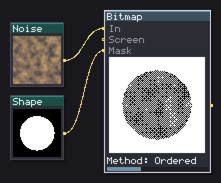
Decides which pixel is ink by threshold, ordered screen, error diffusion or local threshold.
Where a pixel decides whether it is ink, in four different ways set by Method. Threshold is the plain cutoff against Level. Ordered compares against a Screen matrix (Bayer at three sizes, Blue Noise, Clustered, Lines, or From input to wire in any image as the screen). Diffusion spreads the rounding error to neighbors with a Kernel, Floyd-Steinberg is the default and the classic worm-like look, Atkinson only spreads six eighths of the error rather than all of it, which is what burns highlights and shadows to flat paper and flat ink and keeps midtones clean, the actual Mac Plus look. Riemersma walks a Hilbert curve instead of rows, which removes the diagonal streaking a raster scan leaves on a flat field.
Adaptive is the local-threshold method (Sauvola), useful on uneven lighting or a scanned source where one global level cannot work everywhere, Window sets the neighborhood size and Bias how far the local threshold departs from the local mean.
Contrast matters before the method runs, not after, a threshold cannot recover detail the grey never had. Alpha (Keep / Dither alpha / Force opaque) decides what happens to soft edges, Dither alpha is worth it on a sprite with antialiased edges coming in, since a straight Keep leaves half-transparent ink that is not really 1-bit anymore.
In: In (image), Screen (image), Mask (image) · Out: image
Parameters
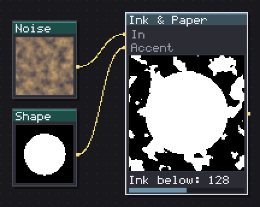
Paints ink and paper in two chosen colors, and adds a third where the Accent input says.
Paints two flat colors, Ink and Paper, over whatever a Bitmap (or anything else) handed you, plus a third, Accent, that replaces the ink specifically where a wired Accent mask is on, an accent plate prints where the art is rather than over the paper. Ink below is the same threshold Bitmap itself reads, since this node is meant to run right after one, in grey.
Keep the dithering and the coloring apart in your own head the way the category does: run Bitmap first to decide which pixel is ink, then this node to say what color that ink is. Reaching for Ink & Paper before binarizing just recolors a grey gradient, which loses the whole point of picking a dither method in the first place. Paper alpha under 100 is worth it for a sticker or an overlay where the background should stay see-through while the ink stays solid.
In: In (image), Accent (image) · Out: image
Parameters
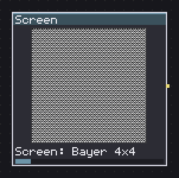
Outputs the threshold field as an image: Bayer, blue noise, clustered dot, lines or classic screens.
Turns the threshold field itself into an image instead of a hidden option of Bitmap, Screen picking Bayer at four sizes, Blue Noise, Clustered Dot, Lines, Cross, Diamond, Spiral, or Pattern Ramp (one of seventeen classic hand-picked pixel screens, Ramp choosing which level of it prints). Cell, Angle and Phase X/Y place and scale the pattern like any other tiling texture.
Because it rides the same image wire as anything else, it can be warped, scaled, blended, or wired straight back into Bitmap's own Screen: From input row, which is worth doing whenever a rotated or custom-scaled screen is needed rather than one of Bitmap's built-in sizes. Phase (Off / Slide / Rotate / Reseed) with Phase % is what makes an animated screen actually move without breaking its own tiling, Slide walks it a whole period, Rotate turns it, Reseed re-places it from an unrelated draw, worth it for a shimmering hologram or a scanline effect over several frames.
Tile safe snaps the angle and cell to the canvas so the pattern actually seams correctly, worth leaving on for anything meant to tile.
In: nothing · Out: image
Parameters
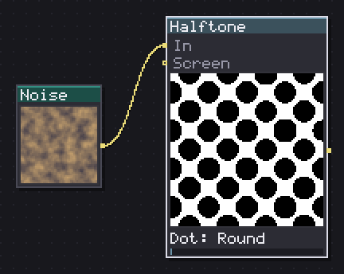
Turns tone into print dots, averaging each cell before choosing the dot size.
A classic print halftone, round or otherwise, and the reason it exists as its own node rather than Screen plus Bitmap: a real halftone averages the tone over a whole cell before deciding how big the dot is, while a per-pixel screen just breaks up wherever an edge happens to cross a cell. Dot (Round, Euclidean, Square, Diamond, Ellipse, Line, Cross, or From input for a custom spot shape) is the silhouette one cell grows into, Frequency how many cells fit across the canvas, and Angle the classic halftone rotation, 45 degrees by default because that is the angle a single-plate halftone reads as least distracting.
Dot gain fattens midtone dots without touching the two ends, which is literally what happens on a real press when ink spreads on paper, worth a small positive value for a print-poster look. Sharpness below 100 softens the dot edge into a ramp instead of a hard decision, closer to a scanned screentone than a clean digital one.
Same Phase/Phase % and Tile safe rows as Screen, for an animated halftone that still tiles cleanly.
In: In (image), Screen (image) · Out: image
Parameters
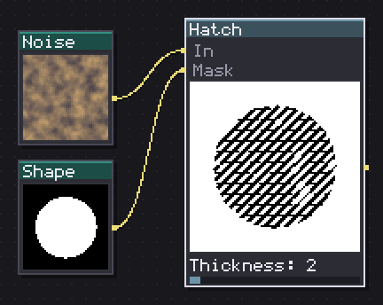
Shades with parallel strokes, adding one layer per tone step without moving the earlier ones.
Parallel strokes shading by tone, adding a new Layer at each tone step rather than moving the ones already drawn, up to four layers. That containment is the whole point: the strokes of a light tone are a subset of the strokes of a darker one, so nothing gets replaced as the tone shifts, which is what stops an animated hatch from boiling frame to frame. Angle step rotates each additional layer relative to the first, the classic cross-hatch look at 45 or 90 degrees.
Spacing and Thickness set the line weight and gap, Jitter wobbles each line's position for a hand-drawn rather than a ruled look, and Taper narrows each stroke to a point at both ends instead of a flat-cut end, worth combining with a little Jitter for something that reads as a pen sketch rather than mechanical hatching.
Wire a Mask in to stencil the hatch the way Bitmap's mask works, no ink outside it at all.
In: In (image), Mask (image) · Out: image
Parameters
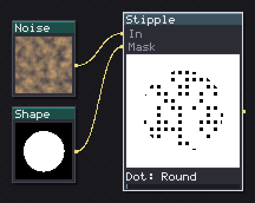
Stipples by density, laying dots in blue noise order, so raising the tone only adds.
Dots scattered by density rather than pixels decided one at a time, laid down in the order a blue-noise field ranks them, so raising the tone only ever adds dots and never re-sorts the ones already placed, which is what keeps a stipple stable across an animation instead of flickering. Min distance sets the lattice pitch the dots sit on, Dot (Round, Square, Diamond, Plus) and Dot size the stamp itself, and Gamma biases how quickly density builds with tone.
This node avoids clumping by construction, since blue noise is specifically the field that spreads points apart, which is the property that separates a proper stipple from dots dropped at random. Same Phase/Phase % rows as Screen and Halftone (Rotate here turns the deposition order itself rather than resampling the lattice, since the lattice is axis-aligned by construction), and the same Tile safe for a pattern that actually repeats.
In: In (image), Mask (image) · Out: image
Parameters
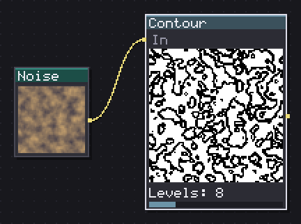
Draws the contour lines of the input field and thickens the stroke where the image darkens.
Draws the level curves of whatever field comes in, the line placed where the tone sits within half a stroke width of one of Levels evenly spaced bands, measured in actual pixels rather than in tone units, so the line stays the same weight on a gentle slope and on a sharp one. A perfectly flat area has no gradient and therefore draws no line at all, which is the honest answer rather than a special case to work around.
Weight by tone is the engraving half of the node: at 0 every line is the same width regardless of how dark that band is, past 0 lines widen toward the dark end, the way a burin cuts wider where a printing plate needs to read darker, a banknote's engraving is built from exactly this. Offset shifts where the bands fall without changing how many there are, useful for lining a contour up against a specific edge in the source.
In: In (image) · Out: image
Parameters
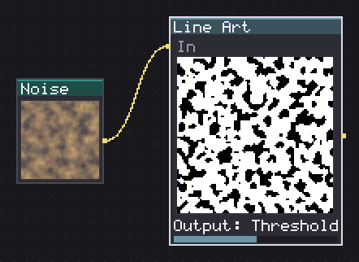
Draws the line with XDoG: two subtracted gaussians, sharpened, in gray, binary or pencil.
XDoG (Winnemoller 2011), a difference of two gaussians rather than a Sobel edge detector, which matters because a gradient detector draws the whole slope of a smooth ramp, while a center-surround operator like this one asks whether a pixel is darker than its own surroundings at a chosen scale and answers exactly zero on a linear ramp, drawing only where there is an actual step. That is why this reads as drawing a line rather than detecting an edge.
Sigma sets the base blur scale, Ratio how much wider the second gaussian is (11-40, in tenths), and Boost how strongly the difference between them gets amplified into a stroke. Threshold and Falloff shape the soft cutoff that turns that amplified signal into ink, Falloff higher makes the cutoff harder. Output picks Edges (grey coverage, good for feeding another node), Threshold (the plain binary line), or Sketch (the same coverage broken up on a 45 degree screen, which reads as pencil hatching rather than scattered specks at a light setting).
In: In (image) · Out: image
Parameters
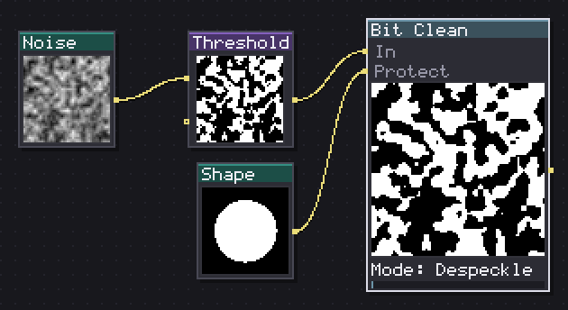
Cleans ink with morphology: kills specks, plugs holes, opens, closes, grows or bridges gaps.
Six morphology operations named the way a printer would rather than a mathematician: Despeckle removes ink islands up to a Radius squared in size, Fill holes does the same for paper pockets fully enclosed by ink, Open and Close are the standard erode-then-dilate and dilate-then-erode pair for shrinking noise or sealing small gaps, Bleed is a plain dilation (dot gain, ink spreading into the fibre), and Trap is the specialized one: it only joins a paper pixel to ink when there is ink within reach on two opposite sides, which fills the gap of a misregistration without also fattening every stroke's outside edge the way Bleed or Close would.
Passes repeats Open, Close, Bleed or Trap that many times, and Sharp corners switches between 4-connectivity (round corners surviving cleanup) and 8-connectivity (sharp ones). Wire a Protect mask in to pin specific pixels back to their original value after every single pass, not just once at the end, so a protected line cannot get eaten by two passes stacking up on it.
In: In (image), Protect (image) · Out: image
Parameters
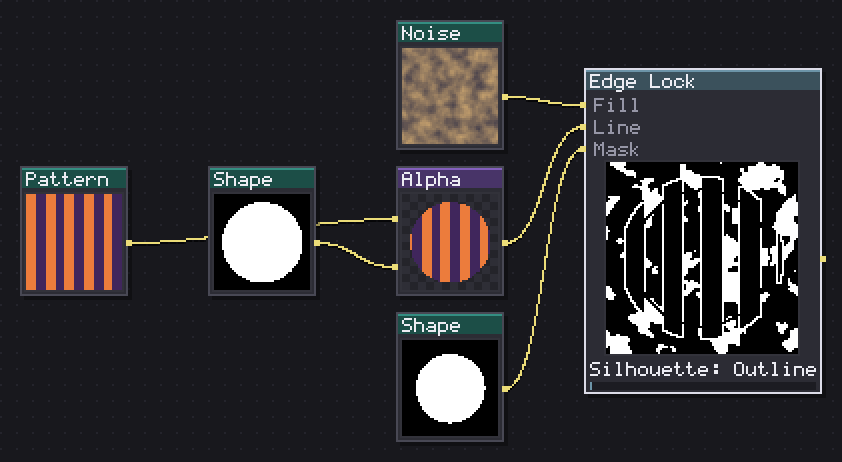
Composites the dithered fill with the line on top so the silhouette always wins.
Composites a dithered Fill with a Line on top, the cheap explicit version of what a proper structure-aware halftone would solve as one expensive optimization: what the eye actually misses when a halftone eats a drawing is the line, so this node just puts the line back, last, after everything else. With nothing wired into Line it hands the fill straight back unchanged, there is no structure to lock.
Silhouette (Outline / Clear / Off) inks or clears a rim around the shape (read from a wired Mask, or the fill's own alpha when there is none) so the outside edge reads as an edge instead of more dither texture, Rim sets how thick. Relief clears the fill's own ink for a pixel or two around the line first, so a dark dither does not drown a thin line sitting on top of it, this is the step that keeps line art legible over a heavy hatch or a dense stipple rather than getting lost in it.
In: Fill (image), Line (image), Mask (image) · Out: image
Parameters
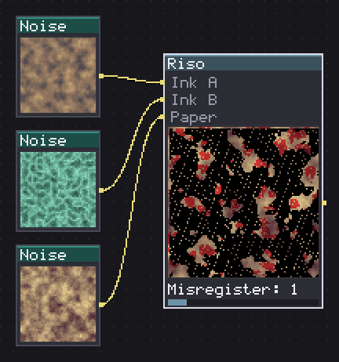
Prints two ink plates on paper, with misregistration, grain, uneven coverage and overprint.
Two ink plates and a paper, simulating an actual riso duplicator rather than blending two flat colors: each plate is a binary pass, either the drum pushed ink through at that point or it did not, which is why this belongs in a 1-bit family at all, a riso really is one bit per ink. Misregister offsets the two plates in opposite directions along Miss angle, the plates never lining up perfectly the way a real press does not either. Bleed dilates each plate before printing, ink spreading into the fibre.
Grain speckles ink out and darkens what survives, one shared field since there is one sheet of paper under both inks. Coverage below 100 drops ink in slow blotches, a separate roll per plate since the two drums miss in different places. Overprint (Multiply, Darken, Average, Ink A, Ink B) decides what happens where both plates land on the same pixel, Multiply is the physically honest one, two translucent inks each taking light out of what the paper reflects, the other four are for when that is not the look you want. Paper alpha below 100 turns the whole thing into a sticker, transparent where there is no ink and no sheet either.
In: Ink A (image), Ink B (image), Paper (image) · Out: image
Parameters